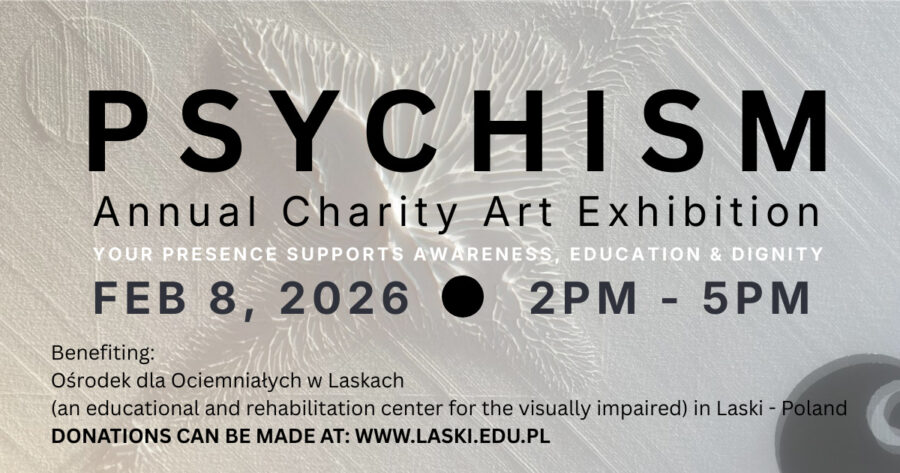

Blaze Lojewski: Psychism – Annual Charity Art Exhibition
PSYCHISM – 10th Annual Charity Art Exhibition by Blaze Lojewski
PSYCHISM is an annual charity art exhibition by Blaze Lojewski, exploring perception beyond sight through contemporary abstract relief works.
The exhibition invites reflection on how meaning, emotion, and awareness emerge through texture, light, and restraint—encouraging viewers to slow down and engage with art beyond the purely visual.
Each edition continues the mission of connecting art with social responsibility, raising awareness and support for the visually impaired community.
Your presence supports awareness, education, and dignity.
ABOUT THE CAUSE
Dr. Błażej Łojewski supports—and invites you to support—the Society for the Care of the Blind in Laski (Towarzystwo Opieki nad Ociemniałymi w Laskach), an organization founded in 1911.
The institution provides education, rehabilitation, and lifelong support for blind and partially sighted individuals, empowering them to live independent, meaningful, and fulfilled lives.